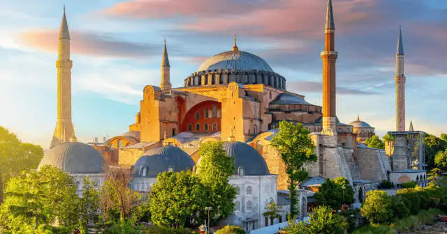

The best time to visit Hagia Sophia is at opening time or after 5:00 PM. The tourist route generally opens at 8:00 AM from April to October and 9:00 AM from November to March.
Quick answer
Arrive at opening for the quietest visit, or after 5:00 PM for fewer peak-hour crowds. The tourist route is closed on Fridays from approximately 12:00 PM to 2:30 PM.
Why Morning Is Better
Morning visits usually mean smaller crowds, better photos, cooler temperatures and faster security checks. Arrive for the seasonal opening time: 8:00 AM from April to October or 9:00 AM from November to March.
Why Midday Is The Worst Time
Between 11:00 AM and 2:00 PM, tour groups and cruise passengers are more likely to arrive. Queues can become longer and the interior can feel much less peaceful.
Best Time For Photos
For exterior photos, early morning is usually the cleanest option because Sultanahmet Square is quieter and the light is softer. Late afternoon can also work well, especially for warm exterior colors.
For interior photos, avoid the busiest midday window. The Upper Gallery is easier to enjoy when fewer visitors are stopping in the same viewpoints.
Best Time In Summer
In summer, heat and crowds build quickly. A morning visit helps with both. If you cannot visit early, late afternoon is usually more comfortable than the middle of the day.
Summer also brings more cruise passengers and family travelers, so online booking and flexible timing become more useful.
Is Friday A Bad Day?
Friday is possible, but the tourist route closes from approximately 12:00 PM to 2:30 PM for congregational prayer. Finish before noon or plan to arrive after 3:00 PM.
Summer, Weekends And Holidays
Summer months, weekends and public holidays bring heavier demand. Book online, travel light and avoid planning your visit too tightly around another timed activity.
How To Build A Sultanahmet Route
If Hagia Sophia is your main priority, place it first in the day. Then continue to the Blue Mosque, Basilica Cistern or Sultanahmet Square depending on your energy and ticket times.
Avoid booking several fixed-time activities too close together. Security checks, prayer periods and crowd flow can all stretch the visit longer than expected.
Local Tip
Book Your Hagia Sophia Ticket
For a smoother visit, book online before you arrive. You get mobile ticket access, instant confirmation and a clearer plan for your Sultanahmet day.

Hagia Sophia Ticket & Visitor Guide
Mobile ticket · audio commentary · from €28.00